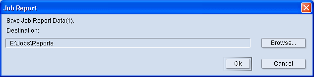

If you have faulty jobs, you can use "Job Report" in the context-sensitive menu to save the data needed for an error analysis to a ZIP archive. The Heidelberg Service department can run an error analysis on these data. The following data are saved:
Proceed as follows to create a job report:
1. In the job list, mark one or more jobs that you want to create job reports for. A ZIP archive will be created for each job selected.
2. Select "Job Report" in the context-sensitive menu.
3. The "Job Report" dialog opens. Click "Browse" to open a browse dialog where you can look for a folder or create a new one.

4. Confirm the dialog with "OK". Creation of the job report then starts. A progress bar displays at the same time. The progress bar shows you in percent when single jobs are completed. For example, if three jobs are selected, 33% displays when the first job is completed, 66% when the second job is completed and finally 100%. If you selected just one job, the progress bar jumps to 100% whenever the job report is created.
The dialog can show this state for quite a while, depending on the volume of data in the job and the number of selected jobs. You may have to wait a while until the report data are created.
5. You can check that your job data were created in Windows Explorer:
Copyright © 2013 Heidelberger Druckmaschinen AG